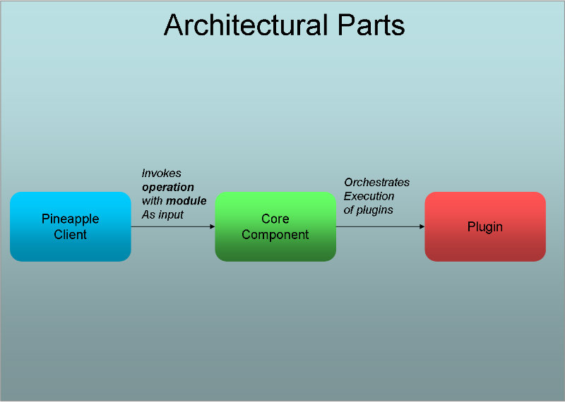

Overview
Architecture
The architecture of Pineapple consists of three parts:
- Clients: The purpose of a client is to provide a user interface and to invoke the core component to get operations executed. Several clients are implemented:
- Standalone web application.
- Deployable web application.
- Maven plugin.
- Core component: The purpose of the core component is to collect all the required input and to activate the proper plugins to get some work done.
- Plugins: All functionality is implemented in plugins. Each plugin can execute operations on a specific type of manageable resource.
Extension points in the architecture
The architecture must support two things. First, it should be possible to provide new clients if the need arises. This is supported by the design of a minimal and simple API to the core component. Secondly, it should be possible to add new functionality with minimal impact on the existing code base. This is supported by the implementation of a plugin based architecture.
For more information about the architecture, please consult the Architecture description.
Runtime directory Structure
Pineapple use a runtime directory structure to read and write files:

The overall content of the structure:
- The Pineapple Home Directory - The root directory for the directory structure.
- The configuration directory (conf) - The configuration directory contains the two configuration files resource.xml and credentials.xml which defines the resources the makes up the the environment configuration for Pineapple. Furthermore the directory contains the configuration file credentialprovider.password which contains the master password for encryption of credentials and the configuration file scheduled-operations.xml which contains the set of scheduled operations.
- The modules directory (modules) - The modules directory holds the modules which are the input used by Pineapple when an operation is executed to do some testing, information retrieval or configuration on resources.
- The reports directory (reports) - The reports directory holds reports generated by report generators.
- The logs directory (logs) - The logs directory holds log files generated by the core component and clients.
Operations
When Pineapple is invoked to do some work it will execute a operation. A operation defines a directive that a collection of targeted Pineapple plugins should execute on.
Pineapple supports any operation and plugins are free to choose which operations they support. Prior to invocation of an plugin, the core component validates whether the operation is supported. If the plugin doesn't support the particular operation then invocation of the operation is skipped for the plugin.
Operation are gathered into workflows by clients. A workflow is a sequence of operations which supports solving a task for the user. From an implementation perspective, the concept of workflows only exists on the client level. The core component and plugins are only aware of the concept of operations.
For more information about operations and worklows, please consult the Operation and workflow reference.
Default workflows
Several default workflows have been defined in the implemented clients. The default workflows are just a set of workflows which have proven useful to the creator during the development and usage of Pineapple. The following default workflows are defined:
- Test workflow: The test workflow is used to invoke plugins which supports testing the state and configuration of resources. The workflow consists of a single operation:
test => "Create test report"
- Deployment workflow: This workflow was the original inspiration for Pineapple; deployment of JEE application with configuration of any appropiate resources. The workflow consists of the operations:
deploy => deploy => "Application is" => undeploy => undeploy configuration application in production application configuration - Create report workflow: The create report workflow is used to invoke plugins which supports the creation of reports. The workflow consists of a single operation:
create report => "Create report"
Configuration data and applications are equal citizens
Pineapple is designed around the notion that data and applications have equal importance. This is reflected in severals ways in the project:
- The workflows contains separate operations for deployment and undeployment of configuration data.
- Deployment/undeployment of configuration data is automated to the same extend as deployment/undeployment of applications.
- Configuration data is bundled with the application in the source project which gives the advantage that the configuration data can version controlled in the same way as the application source.
Resources
Resources are the targets which is managed or tested by executing operations. The concept of a resource in Pineapple is a very broad and it can any manageable entity or device as long as it can be accessed by some kind of protocol.
Resources are accessed from plugins. To enable Pineapple to interface with a specific type of resource, a plugin must be (or already is) implemented which supports access to the resource using the appropiate protocol.
Examples of resources:
- JEE containers: Deployment of applications is done in JEE containers.
- MBean servers: Deployment of configuration data can be done using JMX.
- FTP servers: Deployment of applications and configuration data can require creation of files and directories in specific places.
- Operating systems: Deployment or test of configuration data can require specific settings are present as the OS level.
- DNS: Verification that DNS entries can be resolved in expected ways.
Modules
A module defines the input used by Pineapple to execute operations.
A module contains a managed artifact, i.e. an application and/or model data to test/configure a computing environment. The module contains all information to manage the artifact except for platform specific information and security information which are located in the environment configuration.

A module is defined by a directory layout a minimal set of requirements which is expected by the tool:
- Each module directory have a unique name.
- A module directory can define a optional descriptor file named module.xml which at least defines the name and version of the module.
The content of a module depends on its purpose. A module may contain:
- The configuration data for configuration of resources.
- Application which should be deployed to resources (in form of servers).
- Scripts which should be executed.
- Applications should be installed or uninstalled.
- Test cases for testing resources.
All of the above is separated into two types of content:
- binaries which will include:
- applications
- scripts
- models which include configuration data for:
- configuration resources
- test cases for testing resources
- configuration data for deployment of applications
- configuration data for execution of scripts.
- configuration data for installation/uninstallation of applications.
For more information about modules, please consult the Module configuration reference.
Models
A module is defined in multiple files. The main file module.xml is aggregated by a set of files which each contains input for operations for a specific target environment. This type of file is called models. Examples of usage of multiple models within a module:
- Targeting information for web deployments for multiple environments.
- Test cases for different environments within an IT platform.